Proyectos
IoT_Reloj_Confort
Reloj inteligente e infraestructura IoT para encuestas de confort térmico y medición de variables fisiológicas (XIAO ESP32C3, MAX30102, GY-906, LVGL). Incluye firmware, interfaz y backend en ThingsBoard.
C ESP32C3 LVGL ThingsBoard
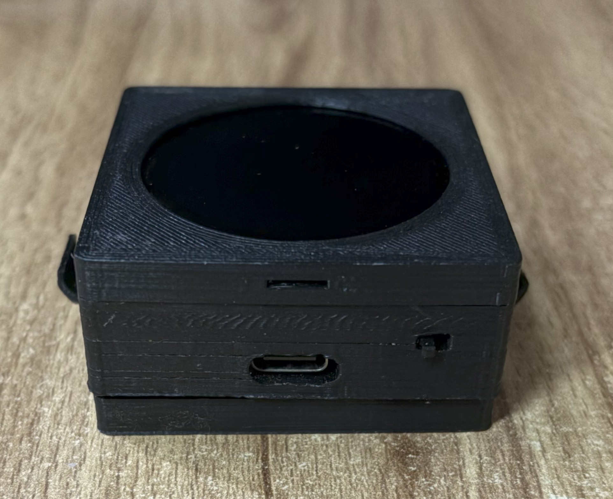
Lampara_acrilico
Lámpara artesanal de acrílico modelada en SolidWorks. Incluye ensambles y piezas (SLDASM/SLDPRT), renders y archivos para fabricación.
Open-Source
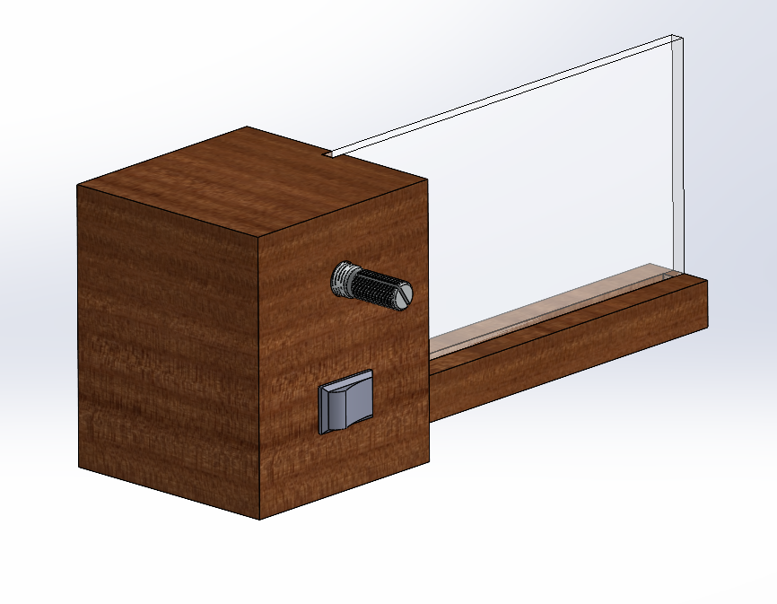
Mecanismos
Colección de levas, mecanismos y un rodamiento modelados en SolidWorks. Contiene ensambles y piezas con vistas previas.
Open-Source
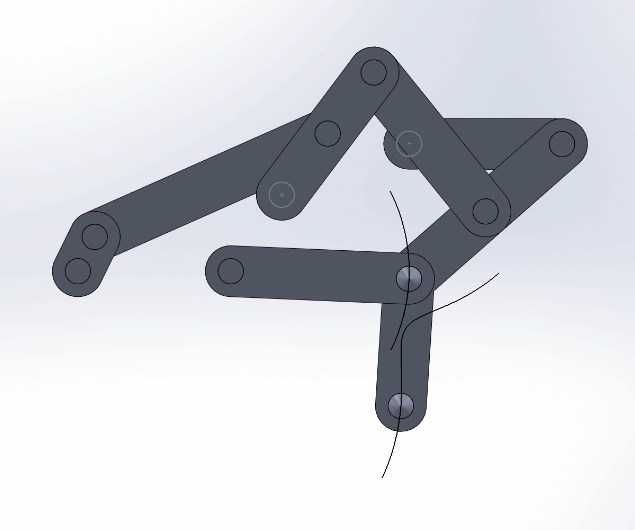
Microondas_LabVIEW
Proyecto “Microondas” implementado en LabVIEW. Incluye VIs/CTLs y archivo de proyecto, con imágenes de referencia e instrucciones de apertura.
LabVIEW
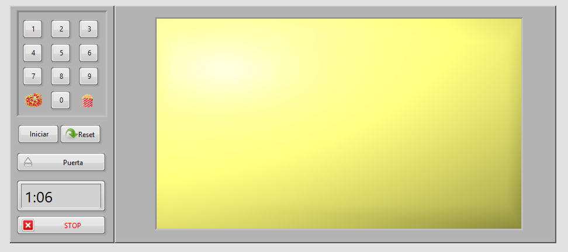
Prenda_generadora
Proyecto de investigación de prenda generadora de energía. Reúne evidencias, reportes, programas en LabVIEW, diagramas en Proteus, datos y resultados.
Open-Source
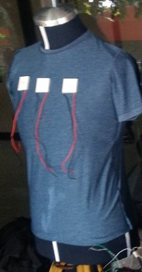
Ajuste_Calificaciones
Sitio en Quarto para cálculo y ajuste de calificaciones por unidad. Diseñado para despliegue en GitHub Pages.
HTML Quarto GitHub Pages Educación
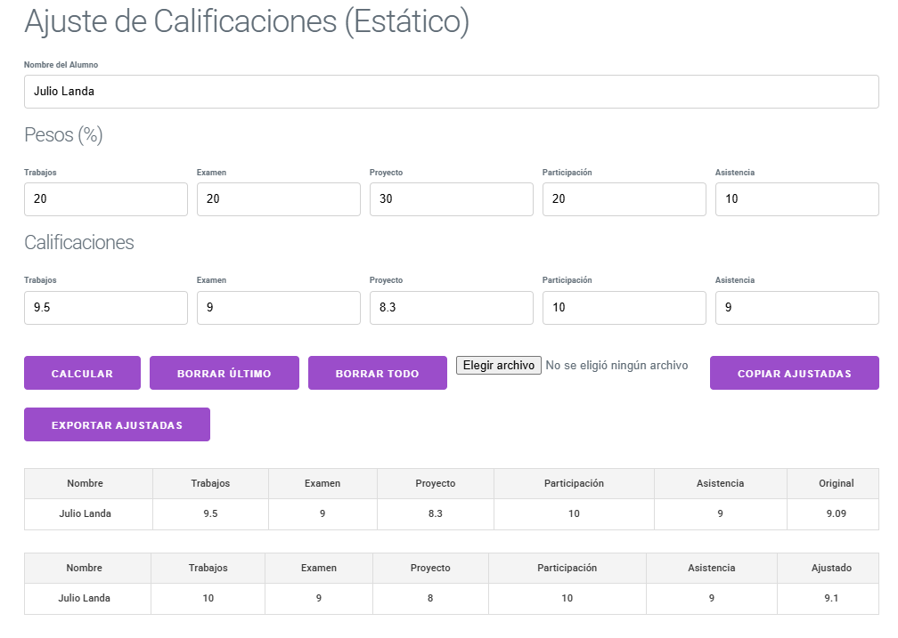
Estrategias_bioclimaticas_vivienda
Diseño bioclimático en clima semifrío seco (Pachuca, Hidalgo). Evalúa estrategias pasivas como absortancia, ventanas Low‑e y sistemas con masa térmica para reducir grados‑hora de disconfort y mejorar el confort térmico.
HTML Bioclimática
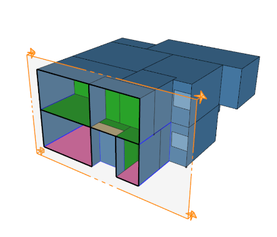
MEIA-2023-Portafolio
Portafolio del Macro Entrenamiento en Inteligencia Artificial 2023: anomalías, bioinformática, contaminantes, geodatos y proyecto final sobre calidad del aire en CDMX.
Jupyter IA Datos
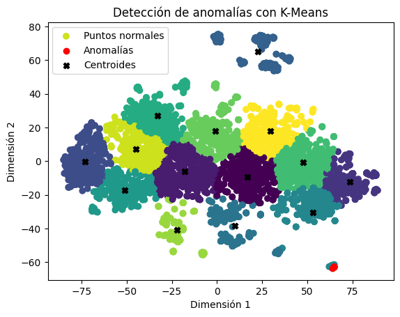
Simulacion_ventilacion_natural
Simulación de ventilación natural en cavidades mediante volúmenes finitos y el algoritmo SIMPLEC. Incluye códigos en Fortran, resultados y reporte con campos de velocidad y presión.
Fortran CFD
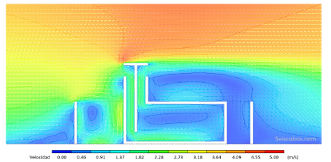
Ajedrez-impresion3d
Conjunto de piezas de ajedrez modeladas en SolidWorks y listas para impresión 3D. Incluye archivos fuente (SLDPRT) y exportados a STL, además de imágenes y renders de referencia.
Open-Source
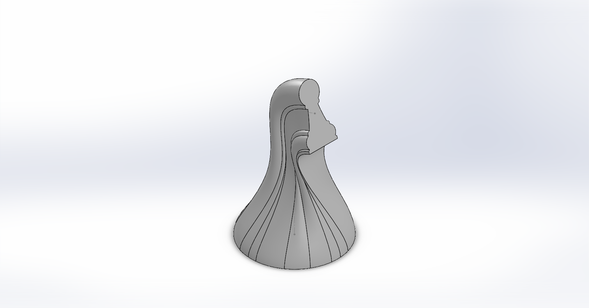
Mesa_giratoria_impresion-3d
Mesa giratoria con diseño mecánico en SolidWorks, piezas para impresión 3D y diagrama eléctrico en Fritzing. Contiene ensambles y partes (SLDASM/SLDPRT), archivos STL e imágenes del ensamblaje.
Open-Source
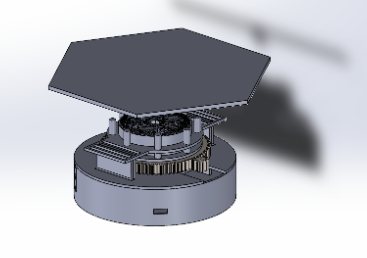
Sistema_medicion_apertura_ventanas Privado
Sistema de registro de apertura/cierre de ventanas con sello temporal para estudios de confort y ventilación. Repositorio privado. Rol: colaborador.
Hardware Firmware IoT Confort/Ventilación Colaborador
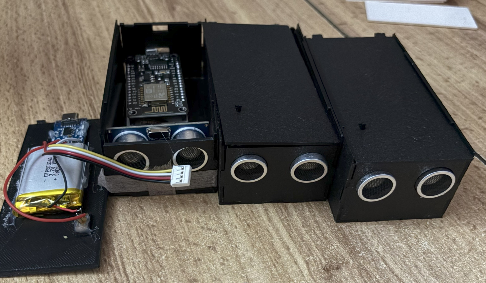
DH2O Privado
Repositorio privado del proyecto DH2O (lata‑mas). Rol: colaborador.
Colaborador Privado
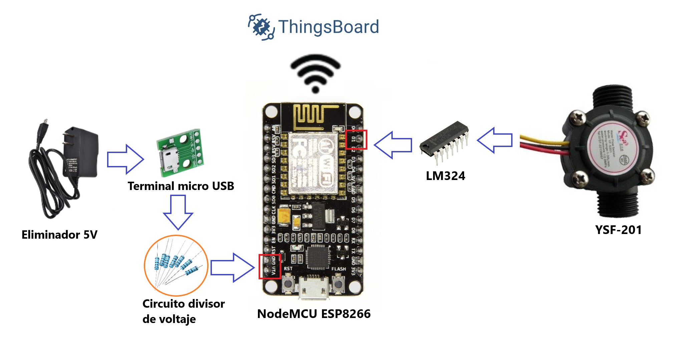